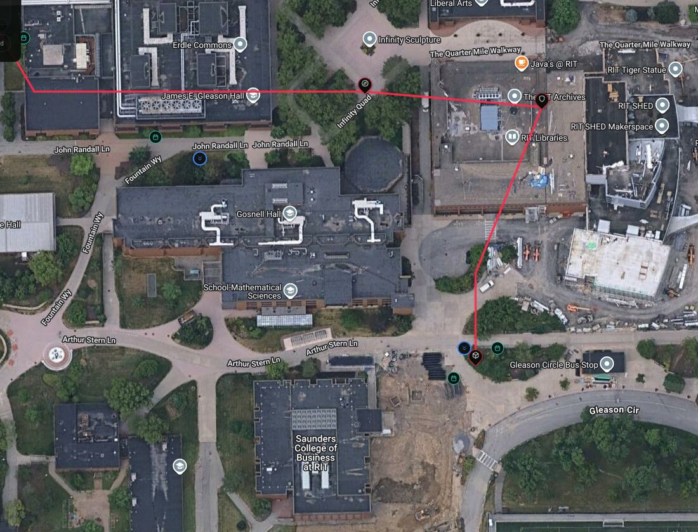
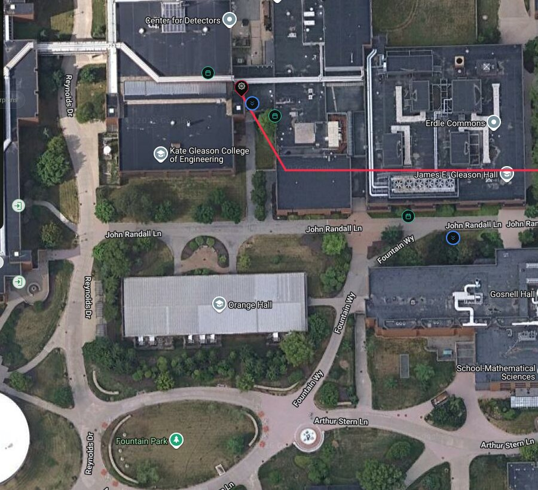
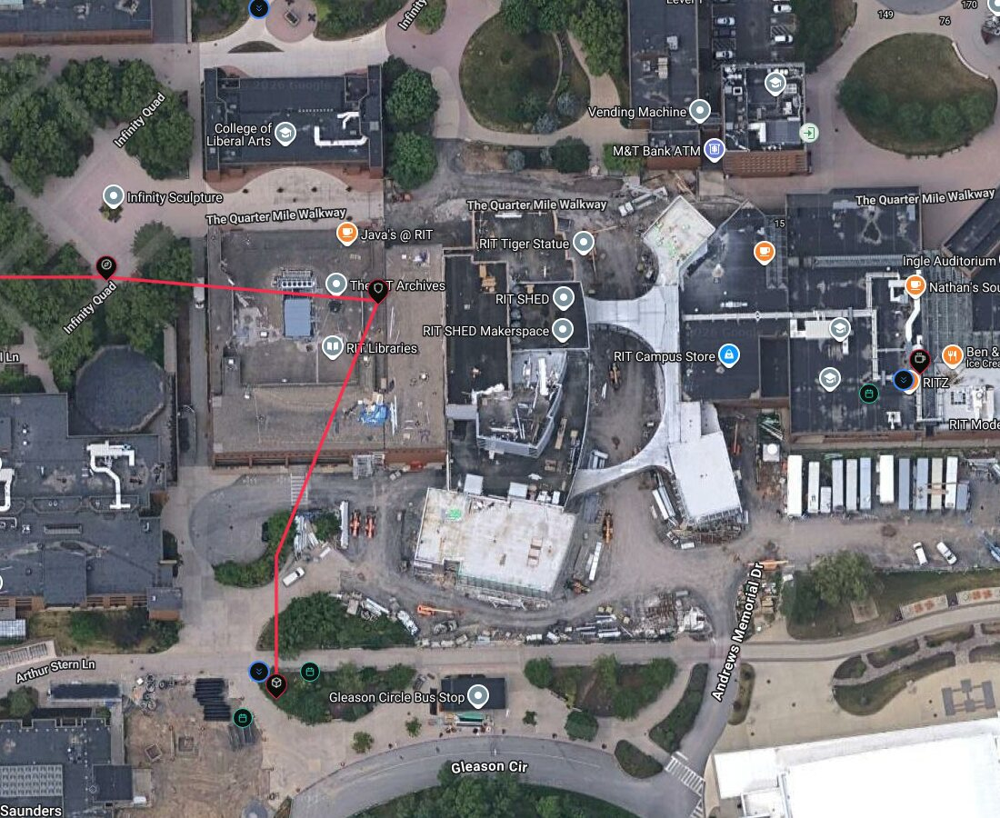

The papers below are what the map is made of. Each one documents a decision the router now depends on — how a corridor is weighted, where a tunnel portal counts as an entrance, what a lift is worth in winter.

Every package below carries this: the full tunnel graph, the building footprints and the entrance nodes, bundled so the map still routes with the Wi‑Fi off and the phone in a coat pocket.

Every marker here began as an FMS blueprint. Four stages turn a static PDF of a floor plan into a node the router can actually path through.
The hard part is not the drawing — it is the georeferencing. Cartesian millimetres on a 1970s schematic have to land within a metre of their true latitude and longitude, or the tunnel does not connect.